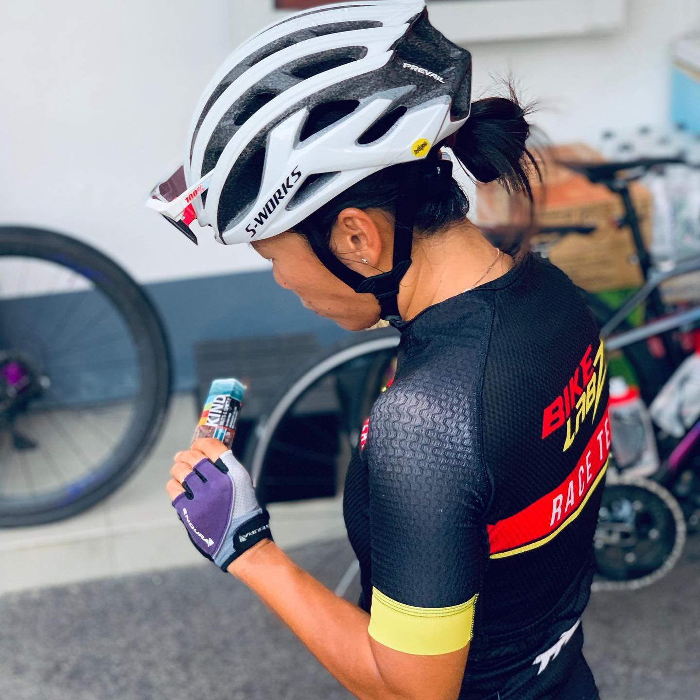
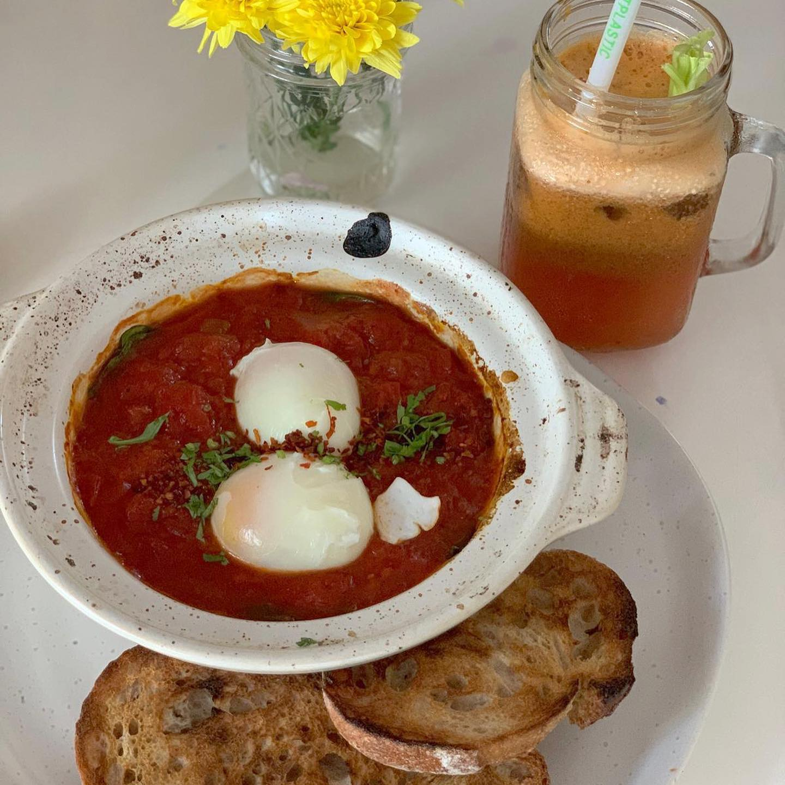
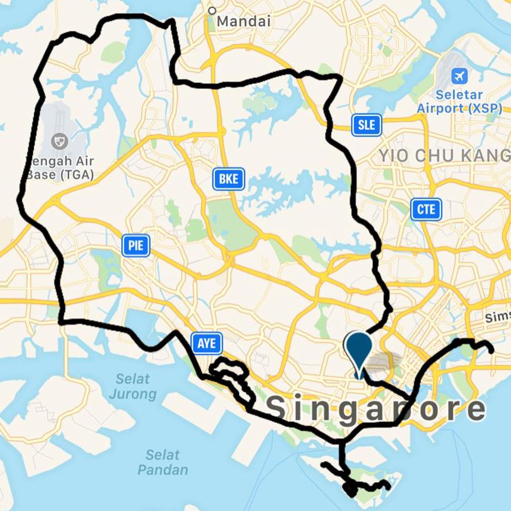

Hey @foodbuddy friends! @chelsie_tan here and this is the end of day 1 of my #protakeover of @foodbuddy Instagram 😉 Today I did 103 km ride with @team_integratedriding - check out the stories about my Saturday training ☝🏼. In this post I would like to share how I fuel myself for intensive trainings like the one I had today. I always have a good breakfast with my favourite coffee from @tadcoffeecompany before a training ride. I make our own organic granola with lots of honey, nuts and seeds 🌰🍯, topped with natural yoghurt and blueberries. It is a great power meal that keeps me going for quite some time. It is also easy and quick to make breakfast before heading off at 5am for a training ride. 🚴🏽♀💨 I usually have a mid training snack. Today’s quick snack was after 60km. I try not to have gels too much when training as they can be overkill. However, I do enjoy these @kindsnacks bars because they have a bit of chocolate coating - nom nom nom 😋 🥜🍫! One of my favourite things about training is the post ride brunch (ok it is my favourite part about training! 😋). I think it is important to have a recovery drink and a light meal straight after training. During the week I get something at home 🏠 , but at weekends I like to try different cafes. Today I tried a new café down by the river - @carrotsticksandcravings … I had the infamous ABC (🍎beetroot🥕) juice and Shakshouka 🍅🥬🍳 with spinach . That basically summed up my training and recovery post-ride. Looking forward to sharing my Sunday with you people ☺️ tomorrow I plan to do something unusual 😄 if anyone can guess what this is - will get a small prize from me 😉💪🏼✌🏼👋🏼 Cheers! @chelsie_tan — #instagramtakeover #sgigfoodies #sgfoodstagram #sgig #igsg #sgathletes #singaporecycling #singaporecyclingfederation #ironmantri #swimbikerun #triathlontraining
2019-07-13 22:45:02
Back to main page